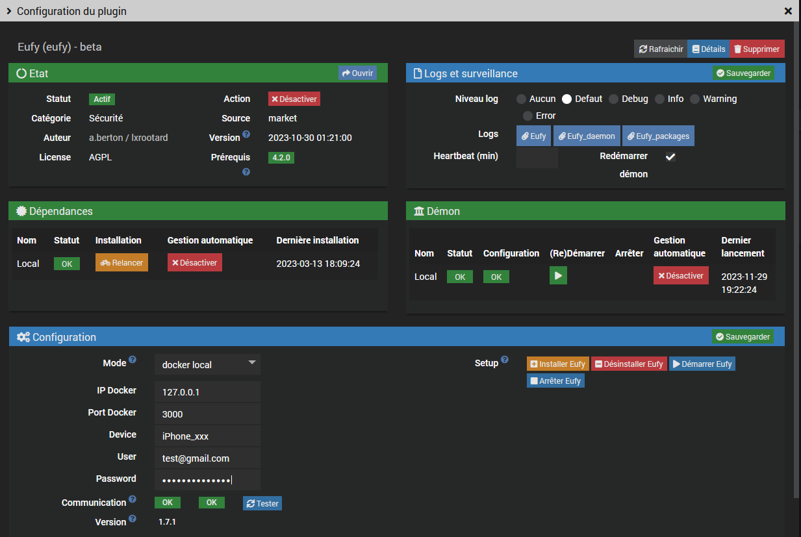
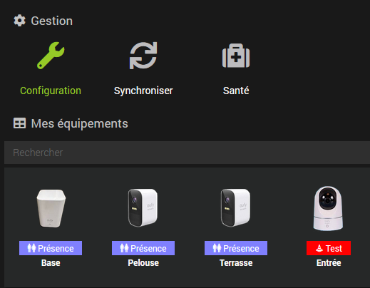
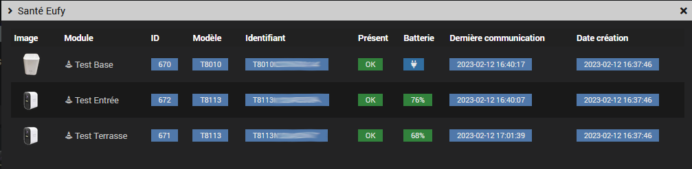
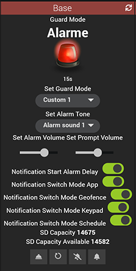
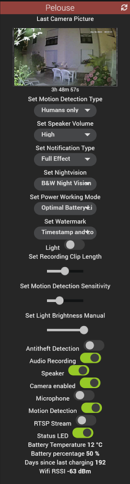
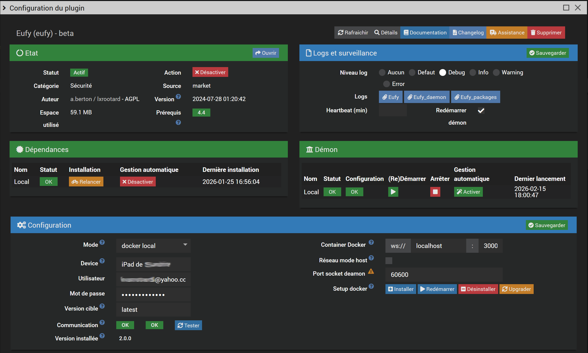
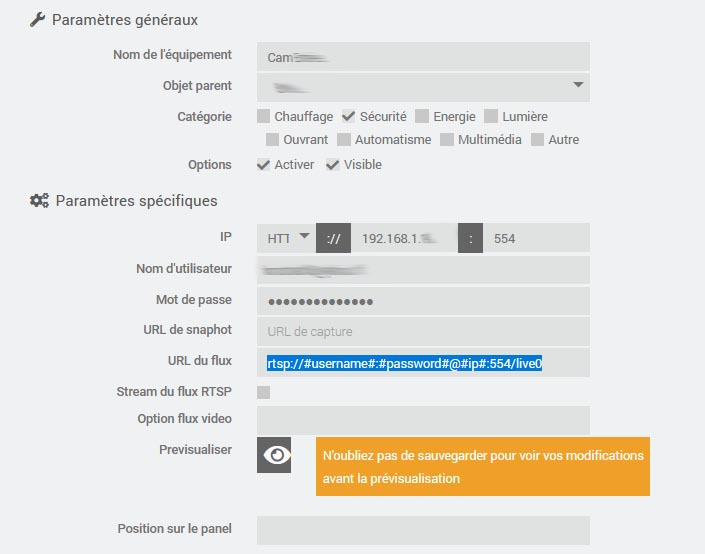

Install the plugin and its dependencies first.
Note: This action does NOT install the eufy-security-ws image.
Choose either local or remote docker mode:
Local mode requires docker already installed and configured.
If it's not the case install the docker management official plugin or from the command line:
$ apt-get install docker.io
Post-installation setup:
eufy-security-ws imageeufy-security-ws containerTRUSTED_DEVICE_NAME used to connect to Cloud serverEufy-WS Cloud service credentialsAssumes an already running eufy-security-ws container.
Optionally you can copy and use the resources/eufyctl.sh script to install and test the eufy-security-ws image maneually on a remote server:
eufyctl.sh install|uninstall|status|test|stop|start <device> <login> <passwd> [ port ]
eufy-security-ws container host IP, 127.0.0.1 by defaulteufy-security-ws container port, 3000 by defaulteufy-security-ws containerNote: The Eufy daemon won't start if the eufy-security-ws container can't connect to the Eufy Cloud service
If something goes wrong first run:
resources/eufyctl.sh test
you should get something like this:
{"type":"result","success":true,"result":{"state":{"driver":{"version":"2.4.0","connected":true,"pushConnected":true}
Note that connected and pushConnected need to be true
Also see see eufy_service_setup log

Note: for now only some devices have been tested. If your device is not supported you can send me the outputs from the resources/test_eufy.py
Please see here for details.

Lists the recognized devices and their status.
  
The URL snapshot command contains the server's picture URL
You can use my ImageViewer widget
Enable picture notifications in your devices parameters from the Eufy app or the snapshots won't refresh
The RTSP stream can be accessed with the Camera plugin
On battery-powered cams it needs to be activated/deactivated using the equipment commands.
The IP is the one from the base and live0...liven indicate the camera number, see the screenshot below:

Check the URL depending your model here
See here